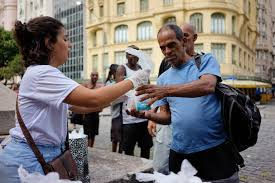
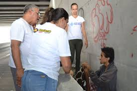
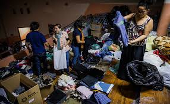
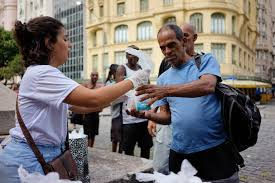
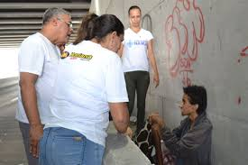
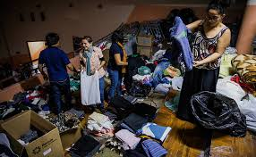
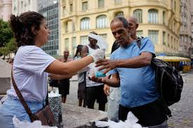
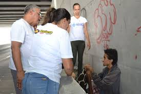
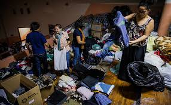

No cenário desafiador em que vivemos, onde a solidariedade é um farol de esperança, surge o Portal do Bem, uma plataforma inovadora dedicada a unir doadores, organizações não governamentais (ONGs) e indivíduos em situação de necessidade. Com uma missão clara e inspiradora, o Portal do Bem visa estreitar laços e promover ações concretas para transformar vidas.
Imagine um lugar onde a generosidade encontra seu propósito, onde cada doação se torna um gesto de amor e cada necessidade é atendida com empatia e compaixão. É isso que o Portal do Bem oferece: um espaço de conexão e solidariedade, onde cada pessoa pode fazer a diferença, seja oferecendo uma contribuição de roupas, doando objetos essenciais ou compartilhando seu tempo e habilidades.
Para as ONGs, o Portal do Bem representa uma oportunidade única de ampliar seu alcance e impacto, conectando-as diretamente a potenciais doadores e voluntários. Com uma plataforma intuitiva e segura, as organizações podem divulgar suas causas, apresentar suas necessidades específicas e receber apoio direto da comunidade.
Já para aqueles que estão em busca de auxílio, o Portal do Bem é um verdadeiro ponto de apoio, onde podem encontrar recursos, orientação e, acima de tudo, solidariedade. Seja em momentos de crise, emergência ou simplesmente de necessidade cotidiana, o Portal do Bem está aqui para oferecer suporte e esperança.
Em um mundo onde cada ato de bondade faz a diferença, o Portal do Bem se destaca como um farol de esperança, iluminando o caminho da solidariedade e inspirando a todos a darem o melhor de si. Junte-se a nós nessa jornada de amor e compaixão. Juntos, podemos transformar vidas e fazer do mundo um lugar melhor para todos.


